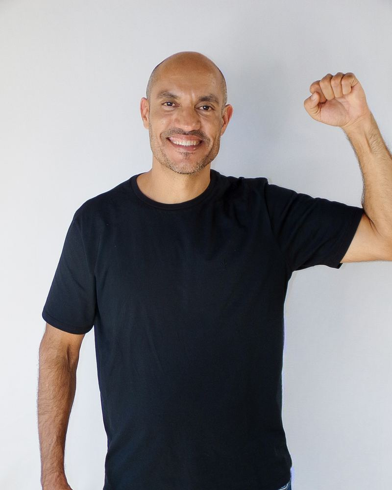

Duas propostas para o site de Fernando Viana 5000. Mesmo conteúdo, mesmas propostas, mesmas fotos — o que muda é o tratamento visual. Abra as duas e diga qual fica.
Versão 1

Direta
Cartaz limpo. A foto inteira, o lema em uma linha, sem movimento.
Sobre esta página. As duas versões são o site completo e navegável, não maquete: dá para percorrer propostas, agenda, apoio e as páginas de acessibilidade, imprensa e privacidade. Ambas estão marcadas como prévia e com noindex, nofollow — não aparecem em buscador.